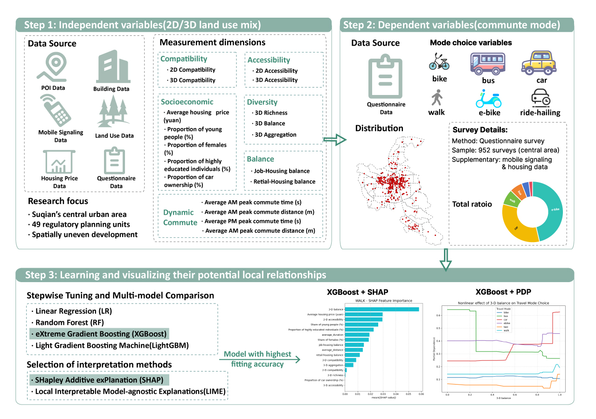
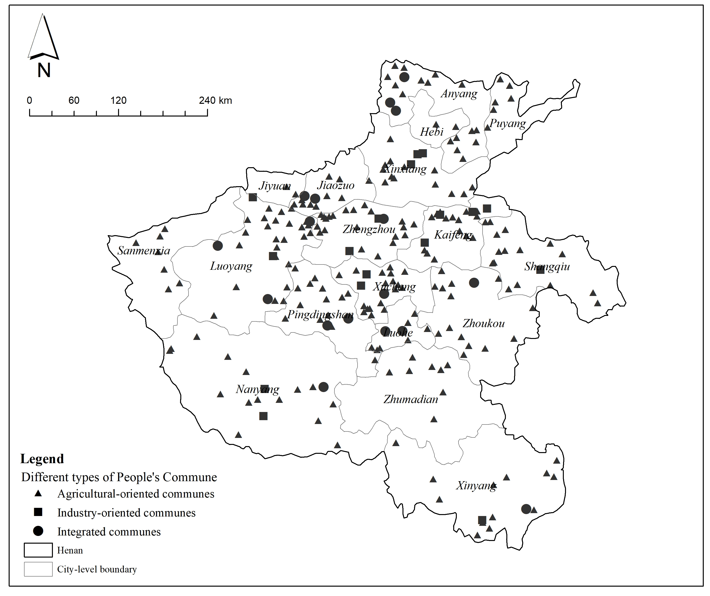
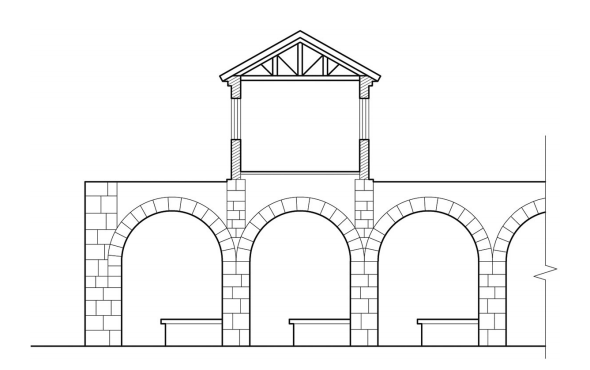
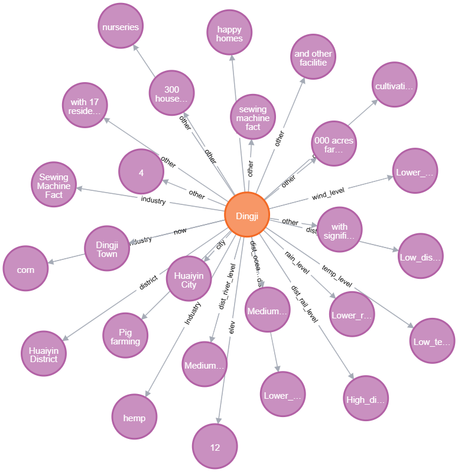
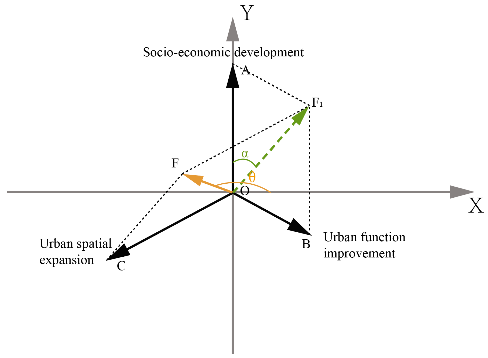

Yi Zhu 朱薏
Hi, I'm Yi Zhu (朱薏). I am a Master's student in the School of Architecture and Urban Planning at Nanjing University, where I am fortunate to be supervised by Xiao Qin. Within the Smart City group, I also receive guidance from Prof. Feng Zhen and Prof. Shanqi Zhang.
I graduated from Soochow University with a Bachelor's degree in Urban and Rural Planning, where I had the opportunity to work with Prof. Fei Yu on the planning history of People's Communes, and with Prof. Yasi Tian on urban sprawl in the Yangtze River Delta.
I am passionate about urban studies and human geography. I enjoy reading books across the social sciences, taking citywalks in culturally rich neighborhoods, and reflecting on the underlying mechanisms behind observable urban phenomena. At the same time, I am fascinated by using technological tools to explore the science embedded in cities and to investigate emerging technologies. This blend of humanistic curiosity and technical exploration shapes how I understand and engage with the urban world.
Research Interests
- Health and feminist geography: activity-based exposure, spatial inequality, and gendered mobility
- Urban built environment: land use mix, urban renewal, and planning history
- GeoAI and computational methods: large language models, knowledge graphs, and spatial analysis
Recent News
Paper accepted at the 2026 Annual National Planning Conference, Guangzhou, China. Heritage Characteristics Interpretation and Cluster Identification of Rural Collectivization Period Sites.
Presented Impacts of land use mix on inequality at the 20th International Association for China Planning (IACP) Conference, Xi'an, China.
Presented Impacts of 2D/3D land use mix on residents' commuting behavior at the 2025 Annual Conference on Territorial and Spatial Planning of China Society of Natural Resources, Xiamen, China.
Selected Publications






Contact
I am open to conversations about PhD opportunities (2026 intake), research collaboration, and peer review. The best way to reach me is by email.
Email: 522024360145@smai.nju.edu.cn
Institution: School of Architecture and Urban Planning, Nanjing University
Location: Nanjing, Jiangsu, China